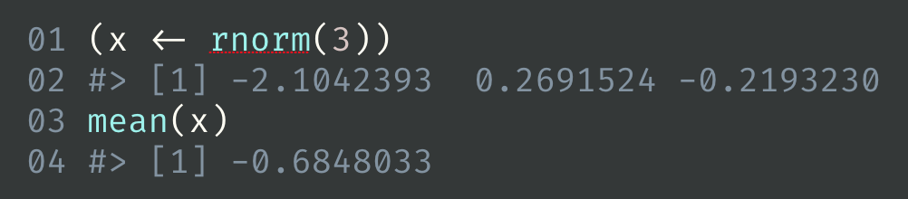

Use reprex(venue = "rtf") to get output in Rich Text Format. This is useful for creating syntax highlighted code snippets – rendered or not – to paste into software such as Keynote or PowerPoint.
Why is RTF special? Although Pandoc can produce RTF and, therefore, so can rmarkdown::render() and reprex::reprex(), Pandoc’s syntax highlighting is unavailable for RTF output. For now, we’ve got to get the functionality from somewhere else. Syntax highlighting is a non-issue for venue = "gh" (GitHub) and venue = "so" (Stack Overflow), because the target sites take care of that when the Markdown content is displayed.

reprex(venue = "rtf") was introduced in v0.2.1 and is experimental. It requires the installation of the highlight command line tool and has only been tested on macOS. It is useful to me already and accumulating some usage is the best way to figure out how to make it useful to others. It would be preferable to use something like the highlight package at some point in the future, but let us experiment with this hack in the meantime.
If you use homebrew, here’s an easy way to install highlight from the shell:
brew install highlightHere is the highlight call implied by the default behaviour of reprex(..., venue = "rtf"):
highlight foo_reprex.R --out-format rtf --no-trailing-nl --encoding=UTF-8 --style darkbone --font 'Courier Regular' --font-size 50 > foo_reprex.rtf
highlight options
If you don’t like the defaults, control highlight command line arguments by setting reprex.highlight.* options. Why options? I didn’t want to burden reprex() with even more arguments and this is usually something you want to set globally for yourself or for an entire project or talk or course.
Example of setting options in .Rprofile:
options(
reprex.highlight.hl_style = "darkbone",
reprex.highlight.font = "Source Code Pro",
reprex.highlight.font_size = 50
)The supported options are reprex.highlight.hl_style, reprex.highlight.font, reprex.highlight.font_size (all shown above), and reprex.highlight.other (a catchall for anything else, shown below).
You could set options for all your reprexing by doing this in your user-level .Rprofile. Create or open this file via usethis::edit_r_profile().
You could also set options for a specific Project in .Rprofile inside the Project. Create or open this file via usethis::edit_r_profile("project").
hl_style must be one of your existing highlight themes and font must be one of your installed fonts.
List available themes:
highlight --list-scripts=themesGalleries of highlighting styles (likely to overlap with the ones you have):
http://www.andre-simon.de/doku/highlight/en/theme-samples.php
https://rclickhandbuch.files.wordpress.com/2014/09/knitrthemesoverview.pdf
You can also override defaults on-the-fly. Here’s how to do that for a single call using withr and, as a bonus, how to use reprex.highlight.other to send arbitrary command line arguments to highlight:
withr::with_options(
new = c(
reprex.highlight.hl_style = "dusk",
reprex.highlight.font = "Fira Code Regular",
reprex.highlight.font_size = 35,
reprex.highlight.other = "--line-numbers --line-number-length=2 --zeroes"
),
reprex::reprex(input = c("(x <- rnorm(3))", "mean(x)"), venue = "rtf")
)
Here’s how to set highlight options for part of an R session:
op <- options(
reprex.highlight.hl_style = "anotherdark",
reprex.highlight.font = "Andale Mono Regular",
reprex.highlight.font_size = 60,
reprex.highlight.other = "--line-numbers"
)
reprex::reprex(input = c("(x <- rnorm(3))", "mean(x)"), venue = "rtf")
options(op)
Render … or not
If you just want to highlight code, but not render it, set chunk option eval = FALSE option, i.e. put a special comment as the first line of your reprex source:
The above source, when reprex()ed, will not include the usual output. This is not specific to venue = "rtf", but it’s more likely to come up in this setting.

How to selectively hide and reveal code
When preparing snippets for a presentation, you may not have the luxury of making each snippet completely self-contained. In the future, we may create a way to run the reprex in the current workspace, as opposed to the usual reprex practice of using a separate R process. For now you can use chunk options to selectively hide code, i.e. to run a large snippet, but only include a small bit in the output.
This is easiest to show by example. If you reprex() this code, only the last three lines and their output will appear in the output. But the other lines will be run, i.e. str_reverse() will be defined, as will the bizzaro() generic and default method.
#+ include = FALSE
str_reverse <- function(x) {
vapply(
strsplit(x, ""),
FUN = function(z) paste(rev(z), collapse = ""),
FUN.VALUE = "")
}
#+ include = FALSE
bizarro <- function(x) {
UseMethod("bizarro")
}
bizarro.default <- function(x) {
stop(
"Don't know how to make bizzaro <",
class(x)[[1]], ">",
call. = FALSE
)
}
#+ include = TRUE
bizarro.character <- function(x) str_reverse(x)
bizarro(c("abc", "def"))
bizarro(1:5)